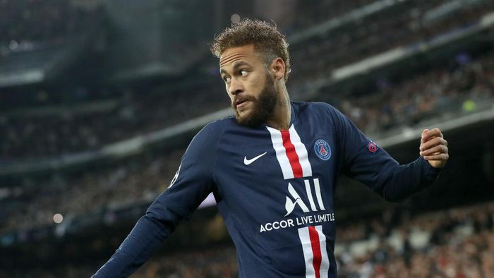

- 
biografi Neymar
| Nama | Neymar da Silva Santos Junior |
| Lahir | 5 Februari 1992 |
| TTG | Mogi das Cruzes, São Paulo, Brasil |
| Pendidikan | Lupe Picasso |
| penghargaan | Samba Emas, Penghargaan Puskás FIFA, DLL |
tentang Neymar
Neymar da Silva Santos Junior atau yang akrab dikenal sebagai Neymar adalah pesepakbola yang lahir di Mogi das Cruzes, Brazil, 5 Februari 1992. Dia merupakan anak dari pasangan Neymar da Silva Sr. dan Nadine Santos. Profesi ayahnya sebagai mantan pesepakbola membuat Neymar tertarik dengan olahraga ini. Neymar bergabung dengan klub bola pertamanya, Portuguesa Santista, ketika usianya 11 tahun. Namun tidak sampai setahun ia harus meninggalkan klub itu. Hal ini disebabkan oleh kepindahan keluarganya ke kota Santos. Bakat bola Neymar membuatnya diincar akademi sepakbola klub Santos FC. Ia resmi bergabung dengan akademi yang telah melahirkan sederet pemain sepakbola terkenal di Brazil itu, 2003. Meski begitu Neymar tak lantas populer. Ia melewati 6 tahun sebelum resmi merumput. Debut perdananya di lapangan dengan tim Santos FC Senior terjadi 7 Maret 2009. Di usianya ke-17, pemain yang mendapat julukan Pele Masa Depan ini berhasil membawa timnya menang 2-1 melawan Oeste. Neymar mencetak 14 gol dari 48 pertandingan di musim perdananya itu. Permainan gemilang kembali ditunjukkan Neymar di musim 2010. Ia berhasil membawa timnya menang ajang Campeonato Paulista 2010 dengan menorehkan 14 gol di sepanjang pertandingan. Neymar juga tercatat melesatkan 42 gol selama musim 2010. Prestasi tersebut mengantarkan Neymar menempati posisi ketiga penghargaan South American Footballer of the Year 2010. Nama Neymar pun disejajarkan dengan legenda bola Brazil lainnya seperti Robinho dan Pele. Kepopuleran Neymar yang meningkat membuatnya dilirik tim sepakbola Inggris, West Ham United. Namun, Neymar yang mengaku ingin fokus di Brazil menolak tawaran kontrak sebesar 12 juta pounds (Rp 214 miliar). Meski begitu manajernya saat itu, Wagner Ribeiro, sadar benar keinginan atletnya untuk berkarir di Eropa. Pesona Neymar juga sukses menarik perhatian Real Madrid. Di 2011, Los Blancos menunjukkan ketertarikan mereka dengan menawarkan pre-kontrak pada Neymar. Meski begitu pemain berusia 21 tahun ini memilih untuk memperpanjang kontrak dengan tim lamanya, Santos FC. Ia pun tampil gemilang di musim itu dengan meraih penghargaan ajang FIFA Puskas Award (2011) dan South American Footballer of the Year (2011). Memasuki musim 2012, Neymar semakin tampil gemilang. Dia berhasil mencetak gol ke-100-nya serta memborong sederet penghargaan diantaranya Golden Ball (2012), Runner-Up FIFA Puskas Award (2012) dan South American Footballer of the Year (2012). Meski sederet prestasi sukses dibuat Neymar bersama Santos FC, mimpinya bermain di laga Eropa membuatnya hijrah ke Barcelona. Ia resmi bergabung bersama Lionel Messi dkk, 25 Mei 2013 dengan masa kontrak 5 tahun. Penampilannya di Barca mendapat sorotan publik. Pemain asal Brazil ini diharapkan dapat mendukung performa tim yang selama ini banyak bergantung pada Messi. Ia berhasil mencetak gol pertamanya 7 Agustus 2013 melalui duetnya dengan Cesc Fabregas. Selain itu, penampilan lincah Neymar di lapangan dinilai membuat pemain La Liga lainnya tidak bisa menghentikannya selain melakukan pelanggaran kepadanya. Neymar kembali mencetak sukses di laga perdana El Clasico Real Madrid vs Barcelona musim ini. Gol pertama dari pemain Brazil itulah yang membuka kemenangan untuk La Blaugrana. Dalam kehidupan pribadinya, Neymar menjadi sorotan ketika dirinya diketahui telah menjadi seorang ayah. Neymar adalah ayah dari bayi laki-laki bernama Davi Lucca yang lahir di Sao Paulo, Agustus 2011. Meski begitu ibu kandung dari bayi tersebut belum diketahui identitasnya. Sementara itu, Neymar kini tengah menjalin asmara dengan model asal Brazil, Bruna Marquzine. Hubungan tersebut sempat menjadi pemberitaan ketika Neymar hadir dalam sebuah video cinta yang diputar di sebuah acara dance yang diikuti Bruna. "Hei cantik. Pesan ini aku persembahkan untukmu yang terlihat cantik seperti biasanya. Tetap buatlah kami bangga dengan dansamu. Kamu sangat mempesona," kata Neymar dalam video tersebut.
INFO NEYMAR TERBARU
Paris - Kebersamaan Neymar dengan sponsor Nike tampaknya akan menemui titik akhir. Dia tak mau memperpanjang kontraknya dengan apparel asal Amerika Serikat tersebut. Neymar sudah menjalin kerja sama dengan Nike selama 15 tahun. Karier sepakbola penyerang asal Brasil itu selalu didukung perusahaan penyedia alat olahraga ternama tersebut sejak berusia 13 tahun.
Ketika Neymar masih bermain di Santos, Nike menjadi sponsor utama klub tersebut. Pemain 28 tahun itu bahkan selalu membela klub-klub yang disponsori Nike, mulai dari Barcelona hingga Paris Saint-Germain. Melansir laporan AS, Neymar memutuskan untuk mengakhiri kontraknya bersama Nike mulai Selasa (1/9/2020). Dia sudah tak lagi muncul dalam iklan produk teranyar Nike.